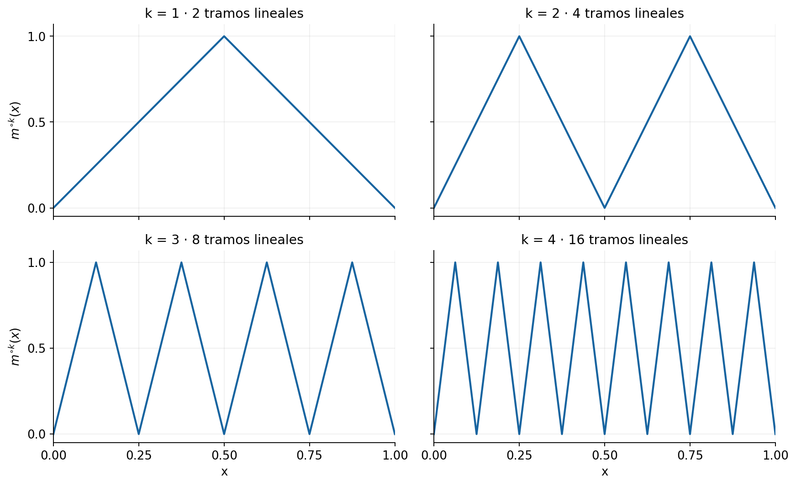

7. Beneficio de la profundidad#
7.1. Teorema 3.4#
Sea
Sobre \([0,1]\), esta es la función tienda,
Para todo entero \(k\geq1\):
La composición \(m^{\circ k}\) se calcula exactamente sobre \([0,1]\) mediante una red ReLU con \(k\) capas ocultas de ancho \(2\).
La función \(m^{\circ k}\) tiene \(2^k\) tramos lineales.
Toda red ReLU con una sola capa oculta que coincida con \(m^{\circ k}\) en \([0,1]\) necesita al menos \(2^k-1\) neuronas en esa capa.
Aquí \(m^{\circ k}\) significa componer \(m\) consigo misma \(k\) veces. Por ejemplo, \(m^{\circ2}(x)=m(m(x))\). Las redes consideradas tienen entrada escalar, activaciones ReLU en sus capas ocultas y salida afín.
7.2. Paso previo Verificar la forma de tienda#
Si \(0\leq x\leq1/2\), entonces \(\operatorname{ReLU}(x)=x\) y \(\operatorname{ReLU}(x-1/2)=0\). Por tanto,
Si \(1/2\leq x\leq1\), entonces \(\operatorname{ReLU}(x)=x\) y \(\operatorname{ReLU}(x-1/2)=x-1/2\). Luego,
Las dos expresiones valen \(1\) en \(x=1/2\). Además,
En particular, \(m([0,1])\subseteq[0,1]\), de modo que todas las composiciones siguientes permanecen dentro de ese intervalo.
7.3. Demostración de la primera afirmación#
7.3.1. Una capa oculta calcula \(m\)#
Las dos activaciones de la primera capa se agrupan en el vector
La salida lineal con pesos \((2,-4)\) da
Esto demuestra el caso \(k=1\).
7.3.2. Cada nueva capa añade una composición#
Para las capas \(r=2,\ldots,k\), definimos
donde ReLU se aplica componente a componente. Cada capa contiene exactamente dos neuronas.
Supongamos que la combinación lineal de la capa anterior satisface
Entonces (7.1) se convierte en
Al aplicar de nuevo la combinación de salida,
El caso inicial ya se verificó y el paso de inducción es válido. Por ello, la red con \(k\) capas ocultas definidas de esta forma y salida lineal
calcula exactamente \(m^{\circ k}(x)\). No hace falta insertar capas de salida adicionales entre las capas ocultas: la combinación \((2,-4)\) ya está incorporada en los pesos de la capa siguiente.
7.4. Demostración de la segunda afirmación#
7.4.1. Caso inicial#
La función \(m\) tiene dos tramos en \([0,1]\):
Sus pendientes son \(2\) y \(-2\), respectivamente. En cada tramo recorre todo el intervalo de valores \([0,1]\).
7.4.2. Paso de inducción#
Supongamos que \(m^{\circ k}\) tiene \(2^k\) tramos, que cada uno tiene longitud \(2^{-k}\) y que en cada tramo la función recorre linealmente desde \(0\) hasta \(1\), o desde \(1\) hasta \(0\).
Al formar
la función exterior \(m\) cambia de fórmula cuando su entrada vale \(1/2\). En cada tramo anterior, \(m^{\circ k}(x)=1/2\) ocurre exactamente en su punto medio.
Así, cada tramo anterior se divide en dos. En el primero, la composición sube de \(0\) a \(1\); en el segundo baja de \(1\) a \(0\). Esto ocurre tanto si el tramo anterior era creciente como si era decreciente, porque \(m(0)=m(1)=0\) y \(m(1/2)=1\).
Por tanto, el número de tramos se duplica:
La longitud de cada tramo se reduce a \(2^{-(k+1)}\), y sus pendientes son alternativamente \(2^{k+1}\) y \(-2^{k+1}\). Como las pendientes de tramos consecutivos son distintas, esos tramos no se pueden unir en uno solo.
Esto completa la inducción y demuestra que el número es exactamente \(2^k\).
7.4.3. Expresión explícita de los tramos#
El argumento anterior también proporciona, para \(j=0,\ldots,2^k-1\),
En los extremos compartidos, las expresiones de los dos tramos coinciden, por lo que la función es continua. Los puntos de quiebre interiores son
En cada uno cambia la pendiente. Por ello hay exactamente \(2^k-1\) quiebres interiores.
7.5. Demostración de la tercera afirmación#
Una red con entrada escalar, una sola capa oculta de \(N\) neuronas ReLU y salida afín tiene la forma
Si \(w_i\neq0\), la neurona \(i\) puede cambiar de pendiente únicamente en
Si \(w_i=0\), su contribución es constante y no añade ningún quiebre. Además, un punto situado fuera de \((0,1)\) no aporta un quiebre interior al intervalo que nos interesa.
En cualquier intervalo que no contenga ninguno de esos puntos, todas las contribuciones son afines, y su suma también lo es. Por tanto, una red de \(N\) neuronas puede tener a lo sumo \(N\) puntos de quiebre interiores. Puede tener menos si algunos puntos coinciden, quedan fuera del intervalo o sus cambios de pendiente se cancelan.
La función \(m^{\circ k}\) tiene exactamente \(2^k-1\) puntos de quiebre interiores. Una red que coincida con ella en todo \([0,1]\) debe reproducirlos: si fuera afín en un entorno de uno de esos puntos, no podría coincidir con las dos pendientes distintas de \(m^{\circ k}\).
En consecuencia,
Queda demostrada la tercera afirmación.
Precisión sobre la cota. Esta es una condición necesaria. El teorema no afirma que exactamente \(2^k-1\) neuronas siempre sean suficientes bajo cualquier convención de arquitectura; la construcción de la primera afirmación utiliza \(2k\) neuronas ocultas repartidas en \(k\) capas.
7.6. Comparación de tamaños#
Composiciones \(k\) |
Capas ocultas de la construcción |
Neuronas ocultas totales de la construcción |
Tramos de \(m^{\circ k}\) |
Cota inferior de neuronas con una sola capa |
|---|---|---|---|---|
1 |
1 |
2 |
2 |
1 |
2 |
2 |
4 |
4 |
3 |
3 |
3 |
6 |
8 |
7 |
4 |
4 |
8 |
16 |
15 |
5 |
5 |
10 |
32 |
31 |
En esta familia, la construcción profunda usa \(2k\) neuronas ocultas, mientras que cualquier representación exacta con una sola capa oculta necesita al menos \(2^k-1\). La comparación muestra una ventaja de la composición para representar estas funciones concretas.
El resultado se refiere a representación exacta sobre \([0,1]\). No garantiza por sí solo que el entrenamiento encuentre esos pesos, que cualquier problema se beneficie de más capas ni que una red profunda tenga siempre menor error de generalización.
7.7. Comprobación breve para dos composiciones#
Si \(k=2\), la fórmula (7.2) produce
Los cuatro tramos tienen pendientes \(4,-4,4,-4\). Sus tres quiebres interiores están en \(1/4\), \(1/2\) y \(3/4\), en acuerdo con \(2^2=4\) y \(2^2-1=3\).
7.8. Comprobación gráfica#


Figura 7.1 Composiciones de la función tienda para una a cuatro capas ocultas de ancho dos. El código y las comprobaciones se encuentran en el cuaderno.#